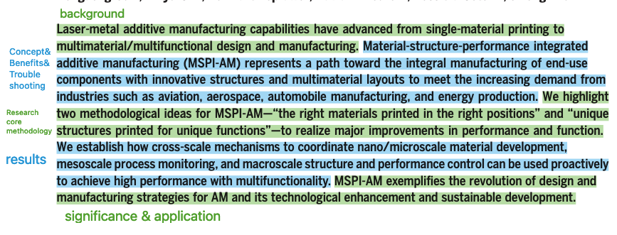
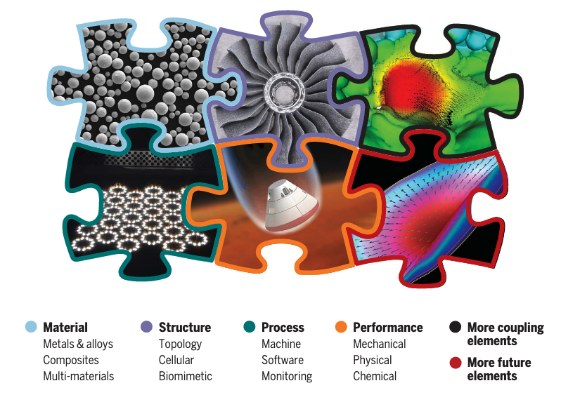
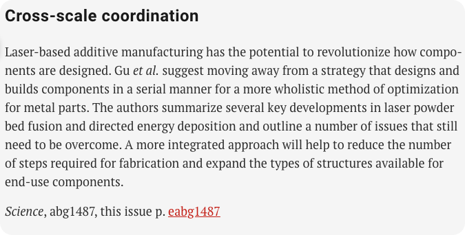

Literature reading, Review 1
Nature- Material-structure-performance integrated laser-metal additive manufacturing
INFO
Title:Material-structure-performance integrated laser-metal additive manufacturing
Author: Dongdong Gu^1*
Affiliation:NUAA
Journal:Science
keyword: conception, cross-sccale
DOI：10.1126/science.abg1487
Structure
- Defining MSPI-AM
- Right materials printed in the right positions
- combination of muti-mat (multi-phase alloy/ alloy and composites )
- integration of functional structures with electronics
- Unique structures printed for unique functions
- How to choose Structure （TO，CS，Biomimetic）
- Challenge of applying the structure
- Realizing MSPI-AM（Cross-scale coordination）
- Nano- and microscale material control
- a. Mono-mat :phases.microstructure,interfaces
- b. Compatibility between different mat.
- c. Mat and stru for performance and func （chemical, physical, mechanical properties & printability ）
- Mesoscale process control (printing process integration)
- a. the interaction of the laser with the powder
- b. complex physical processes of powder melting, melt pool formation, and defects
- c. laser-induced solidification behavior of the melt pool
- Macroscale structure and performance control
- a. multiprocess printing with collaborative use of various processes
- b. integration of multiple structures (include optimization of para. Scanning pattern etc.)
- c. multifunction coupling and verification .
- Nano- and microscale material control
- The outlook for enhancing MSPI-AM
- mat-oriented （digitized material and printing database for different mat）
- process-oriented （digital twins and Big data for printing-stability）
- function-oriented ( hybrid functions ;More complex after integration ；interconnections of processes)
Abstract & Intro & Results
Abstract

Intro
BG：(para1)
superiority of Area Metallic materials-High performance mat-(call for)AM-superiority of AM
Specification：(para2,3,4) conception and characterization of AM:LDED & LPBF
Past Research:(para 5) Historical context and development of AM
Challenges:（para 6）
- 1.Mat limit
- 2.systematic cross-scale method lacks
- 3.basic sciences behind to connect steps lack
Proposed innovation & structure（para 7）
Results
Omitted
Emphasis and the key

The conception entitled ‘Material-structure-performance integrated’ instead of ‘MSPPerformancerI’, which is largely attributed to Performance is the final effects while the first three is the tangible elements of AM.
Research highlights implied that Cross-scale coordination is the key.Interested Papers
135–137：粉末床激光对粉末的贯穿深度，粉末吸收热量的传热学现象
138-140:粉末吸收率
143-145:仿真
150-152:固化
173:detect method
174:Materials Genome Initiative (MGI)
Reflection：
Science顶刊的review论文的主体框架结构严谨，可以很明确看到许多分点 感觉看下来最能看进去的就是intro，intro的分解最简单。看正文的时候，优先去分析结构，对于正文的实际例子其实没有图片的情况下理解是有障碍的，所以可以选择性忽略；但同时，这部分看不懂的内容同样是更具有实证价值的，是实际研究的细节，对于关注的内容可以重点挑出来读。另外需要抓重点，文章的重点是什么需要有一个清晰的认知，这一块可以通过AI总结或者例如Science的Research highlights这种别人总结的点去理解。
此外，对于正文，并没有感受到MSPI-AM的魅力,MSPI到底表达的重点是什么？
MSPI-AM的魅力在于提供了一套整合的思路，把所有时兴的概念（OT，biomimetic，gradient）都融合进去，给了前沿的、概念性的研究一些落地的可能性；在后续的理解中，我意识到，MSPI的意义更多在于提供了一个整合性的知识框架，帮助前沿的研究做系统性的归纳。
金属3D打印整合程度不足,基调是未来要整合，做出一个全流程的工艺方法。一体化打印的难点在哪？ 如果是整合，先是各个部分的材料、结构、加工方法怎么选，而上述的重点应该在连接各个部分，材料与材料之间，结构与结构之间
Right materials printed in the right positions这部分说明了怎么选材料 Unique structures printed for unique functions这部分说明了怎么选结构，以及目前选的这些结构的三个困境 Nano- and microscale material control说明了单/多材料、材料与结构性能之间的联接 Mesoscale process control说明了主要是粉末、激光等打印过程的元素之间是怎么连接以及打印介观层面的本征与物性 Macroscale structure and performance control说明了多工艺连接、多结构与工艺过程之间的连接，多功能耦合、制造检测验证之间的连接
仿真的作用： 在介观尺度中模拟热力学行为，对于成型指标如致密性的成因有更深入的认知。
Wording and phrasing
重要性：cornerstone
影响：implication
内涵：Connotation
实验观测的：empirical
整体的：holistic
链接：be geared towards both A and B
仿生:bio-inspired ->biomimetic
表明：imply，signify
均匀化：homogenization柔软的：pliable
归因于：is attributed to
范例paradigms
实施：implement
多样的：hybrid
想要的：is favored
固有的：intrinsic
相互作用：interplay
强效作用：potent effect
成品表面：finish
一致的：coherent
冶金的：metallurgical
在challenge和proposed innovation之间的段落链接： 上一段说的是在材料、系统的研究方法、基础的理论缺失等不足之处 普通的就是In order to overcome，但在这里笔者选择通过指出了解法的出发点，也就是各种不足之处所缺乏的系统完整性的背后的核心本质，来引出创新点。 The interdisciplinary nature of laser-metal AM determines its rich scientific and technological connotations with respect to material (25–28), structure (29–32), process (17, 33), performance/function (34–36), and associated applications (37–39).
thereby revealing the underlying structure-performance relationships intrinsic to a materials genome.